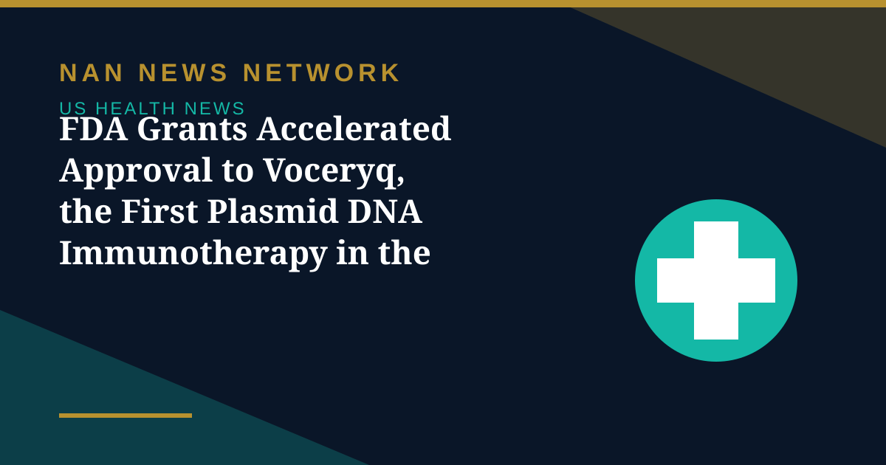

FDA Grants Accelerated Approval to Voceryq, the First Plasmid DNA Immunotherapy in the US

US regulators have granted accelerated approval to Voceryq, a new treatment intended to reduce repeat surgery for adults with recurrent respiratory papillomatosis, a rare disease that causes wart-like growths in the airways, the Food and Drug Administration announced on Friday, October 30.
A first for plasmid DNA immunotherapy
The FDA described Voceryq, made by Inovio Pharmaceuticals, as the first plasmid DNA-based immunotherapy approved in the United States. It targets human papillomavirus types 6 and 11, which cause the disease. It is not the first immunotherapy for the condition: the FDA approved Papzimeos, which uses a different technology, in August 2025. Surgery can remove the growths, but the virus can remain in tissue and patients may need procedures repeatedly over many years.
What the evidence shows — and what it does not
The decision drew on an open-label study involving 32 adults. Among 26 participants who had needed at least three surgeries in the preceding 12 months, seven — 27% — required no surgery during the first year after treatment. The approval does not establish a cure: it rests on reduced need for surgery, an intermediate outcome the FDA considers reasonably likely to predict clinical benefit, and Inovio must conduct post-approval studies to verify that benefit. The company said it expects orders and shipments to begin in about 60 days, with full commercial deployment in the first quarter of 2027 — company forecasts, not confirmation the medicine is already available.
Sources: FDA via EB News Daily, JBizNews, October 31, 2026
More on US Health News
- FDA Approves At-Home Subcutaneous Induction for Skyrizi in Crohn's Disease
- FDA Authorizes 24 Velo Nicotine Pouches, Bringing Total Authorized Pouches to 67
- FDA Updates Menopause Hormone Therapy Labels for Three More Products in Women's Health Push
- FDA Declares Trader Joe's Chicken Wrap E. Coli Outbreak Over After 50 People Fell Ill
- FDA Recalls More Than 21,000 Bottles of Blood Pressure Drug Over Excess Active Ingredient
- FDA Recall: Miyoko's Plant-Based Butter Pulled in 10 States Over E. Coli, Yeast and Mold
- CDC: Drug-Resistant Germs Cause Nearly 9.7 Million US Infections a Year
- CDC Deputy Director Jennifer Shuford to Leave After Midterms, Report Says
- FDA Clears Cullinan's Velinotamig Trial for Autoimmune Blood Disorders
- Regeneron Extends US Ebola Supply Deal Worth About $270 Million Through 2031
- FDA Warns San Francisco Fermented Foods Maker Over Pathogen Risks and Labeling
- Salmonella Oyster Recall Expands: What to Know About the Little Wicomico Outbreak
- Graziers Raw Milk Cheese Recall: 13 Sick, 8 Hospitalized as FDA Issues Class I Warning
- CDC and FDA Performance Ratings Hit All-Time Lows in Gallup Poll